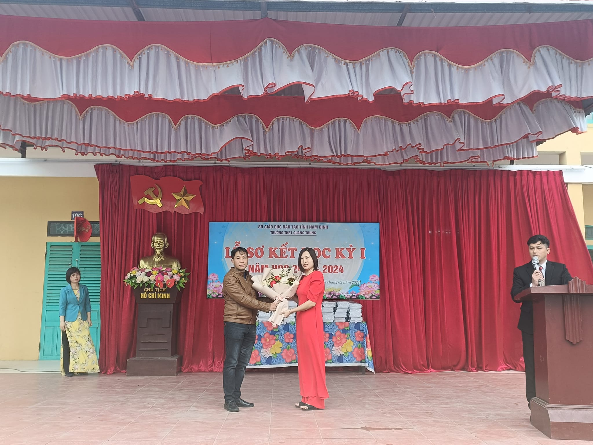
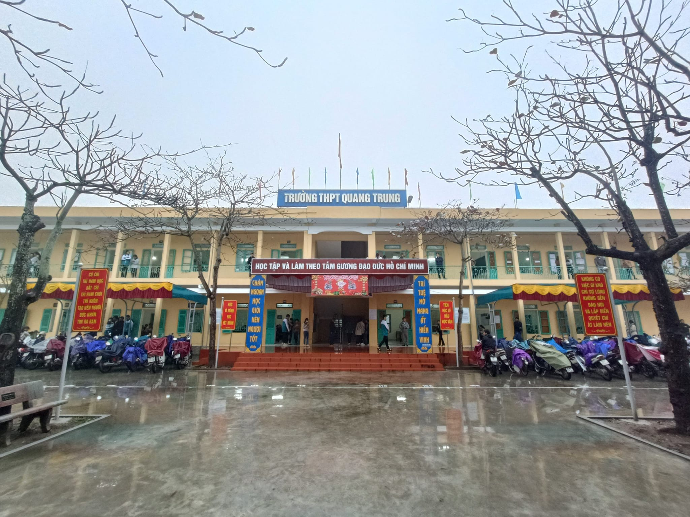
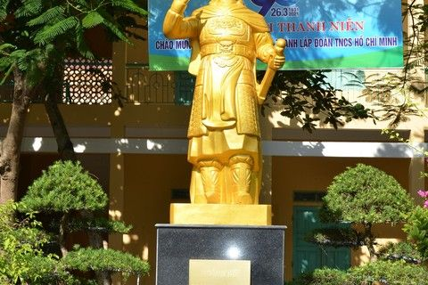
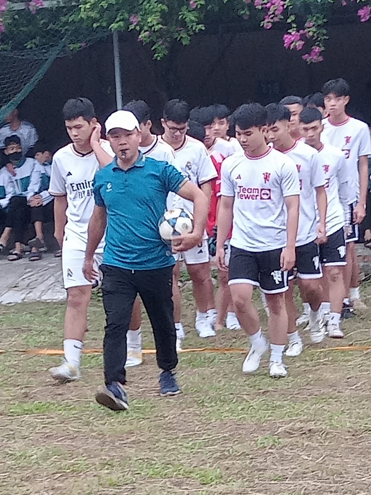

Là một trong top trường THPT Quang Trung vậy nên ban giám hiệu nhà trường thường xuyên quan tâm bồi dưỡng đội ngũ giáo viên hướng đến tập thể vững mạnh, nghiệp vụ vững vàng. Các thế hệ giáo viên phấn đấu không ngừng mang về nhiều thành tích nổi bật nhận sự vinh danh khen thưởng. Truyền thống vẻ vang mãi lưu danh những đóng góp bồi dưỡng, lái đò chỉ hướng các thế hệ học sinh trưởng thành.

Dù bất kỳ hoàn cảnh nào thì nâng cao giáo dục toàn diện vẫn là mục tiêu chính mà trường THPT Quang Trung hướng đến. Một ngôi trường có truyền thống hiếu học lớp lớp thế hệ học sinh tốt nghiệp nắm giữ nhiều vị trí quan trọng mang lại đóng góp to lớn cho tỉnh và nhà nước. Đó cũng là niềm tự hào của các thầy cô, nguồn cổ vũ động viên tiếp tục phấn đấu cống hiến cho sự nghiệp giáo dục.

Thực hiện chương trình công tác Đoàn và phong trào thanh niên năm học 2023 - 2024 của Đoàn trường THPT Quang Trung về công tác phát triển đoàn viên, nhằm không ngừng củng cố và phát triển tổ chức Đoàn nhà trường, tạo điều kiện thuận lợi để thanh niên nhà trường thi đua học tập, cống hiến sức trẻ của mình trong sự phát triển của công tác Đoàn và phong trào thanh niên. Sáng 10/12, Đoàn trường THPT Quang Trung long trọng tổ chức Lớp bồi dưỡng nhận thức về Đoàn TNCS Hồ Chí Minh cho 276 thanh niên ưu tú của các chi đoàn trong toàn trường.

Khai mạc Giải bóng đá nam 7 người lần thứ hai năm học 2023 - 2024 - Đoàn trường THPT Quang Trung 🌺🌺
📌 Sáng 05/11/2023, Đoàn trường THPT Quang Trung tổ chức Lễ khai mạc “Giải bóng đá nam 7 người lần thứ hai năm học 2023 - 2024” tại sân vận động huyện Nam Trực. Đến dự và động viên các đội bóng có thầy giáo Trần Nghị - Bí thư Chi bộ - Hiệu trưởng nhà trường, các thầy cô giáo trong BGH, giáo viên chủ nhiệm lớp và đông đảo các bạn học sinh đến cổ vũ hết mình cho các lượt trận vòng loại.
Đây sẽ là hoạt động giải trí, nâng cao tinh thần thể dục thể thao, tinh thần đoàn kết cho các em học sinh. Mong rằng 9 đội bóng sẽ thi đấu hết mình với tinh thần ”fair - play” và dành Cup vô địch về cho đội của mình.